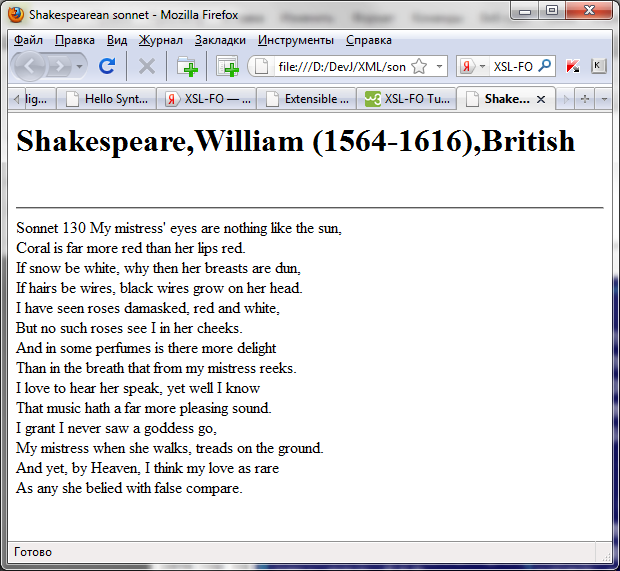

Цель лабораторной работы: Познакомиться c языком преобразований XSLT.
Время для выполнения: 4 академических часа.
Содержание работы.
Тема: Использование языка XSLT для преобразования XML документа в формат HTML.
Задание: Взять в качестве исходного документа XML документ, созданый в лабораторной работе №1. Используя Пример, представленый ниже, лекции и теоретические сведения, написать коммандный файл для получения из XML документа, согласно XSL правил (необходимо также Вам создать), документа HTML, представляющего в виде гипертекста указаную в первоначальном документе информацию.
Замечание. Для работы потребуются инструментальные средства: любой текстовый редактор (подойдет блокнот), парсер XSLT шаблонов Xalan (скачать),
Теоретические сведения. Данные о языке XSLT можно почитать здесь и здесь.
Практический пример.
Пусть имеется созданый XML документ.
Для преобразования в HTML мы создали шаблон
Пусть исходный XML документ, а также XSL шаблоны находятся в одной текущей директории. Соответсвенно в поддиректории classes находятся класс xalan в директории с таким же названиями.
Тогда комманда для преобразования могут выглядеть следующим образом:
java -cp classes\xalan\xalan.jar org.apache.xalan.xslt.Process -IN sonnet.xml -XSL sonnetrules.xsl -OUT sonnet_tesult_html.htm
Получаем результирующий файл
